00:02你已经看到了在 TensorFlow 中，你如何指定一个神经网络架构，从而计算出作为输入 x 的函数的输出，以及如何指定一个代价函数。
00:15然后 TensorFlow 会自动使用反向传播来计算导数，并使用梯度下降或 ADAM 来训练你神经网络的参数。
00:26因此，反向传播算法，它计算你的代价函数关于参数的导数，是神经网络学习中的一个关键算法。
00:37但它实际是如何工作的呢？
00:40在本视频以及接下来的几个选修视频中，我们将尝试了解反向传播是如何计算导数的。
00:48这些视频完全是选修的，并且确实会涉及一点点微积分。
00:55如果你已经熟悉微积分，我希望你会喜欢这些视频。
00:59但如果不熟悉，也完全没关系。
01:04我们将从微积分的最基础部分开始建立，以确保你拥有理解反向传播如何工作所需的所有直觉。
01:14我们来看看。
01:16我将使用一个简化的代价函数，j 关于 w 等于 w 的平方。
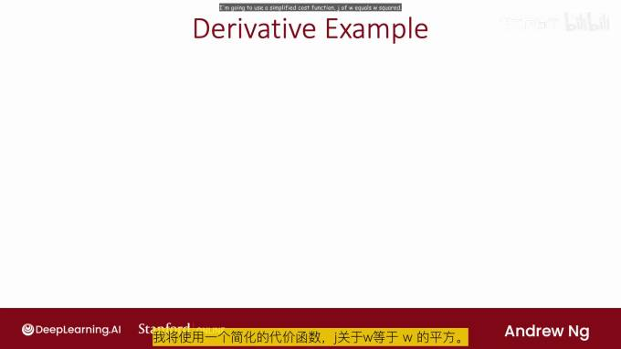
01:24所以代价函数是参数 w 和比如说 b 的函数。
01:30而对于这个简化的代价函数，我们暂且假设 j 关于 w 等于 w 的平方。
01:36在这个例子中我将忽略 b。
01:40并假设参数 w 的值等于三。
01:44S 那么 j 关于 W 将等于九，即 w 的平方，或者说三的平方。
01:52现在，如果我们将 w 增加一个微小的量，称为 epsilon，我将其设为零点零零 r。
02:06买宁 W 的值会如何变化？
02:10如果我们将 w 增加零点零零一，那么 w 变为三加零点零零一，即三点零零一。
02:20那么 J 关于 W，也就是我们上面定义的 W 的平方，现在是这个三点零零一的平方，即九点零零六零。
02:32所以我们看到的是，如果 W 增加了零点零零一，我将用这个向上的箭头来表示 W 增加了零点零零一。
02:44其中零点零零一就是这个小量 epsilon，那么 J 关于 W 大约增加了它的六倍，六乘以零点零零一。
03:00它实际上不是增加到九点零零六，而是九点零零六零零一。
03:08但事实证明，如果 epsilon 是无穷小的，我说无穷小，意思是非常、非常、非常、非常小。
03:19相当小，但它不是无穷小。
03:22如果 epsilon 是零点零，很多个零后跟一个一，那么这就会变得越来越精确。
03:31在这个例子中，我们看到的是，如果 w 增加了 epsilon，那么 j 大约增加了六乘以 epsilon。
03:42在微积分中，我们会说 j 关于 w 对 w 的导数等于六。
03:54这整个的意思就是，如果 w 增加了一点点，j 关于 w 会增加六倍那么多。
04:02如果 epsilon 取一个不同的值呢？
04:04如果 epsilon 是零点零零二呢？
04:08所以在这种情况下，W 将是三加零点零零二，而 W 的平方变为三点零零二的平方，即九点零一二零零四。
04:23在这种情况下，我们得出的结论是，如果 W 增加了零点零零二，那么 j 关于 w 大约增加了六乘以零点零零二。
04:35它大约增加到九点零一二，而这个零点零一二大约是六乘以零点零零二。
04:50这里有额外的，你知道，零点零零零零四，因为 epsilon 并非完全无穷小。
04:59我们再次看到了 W 增加的量与 j 关于 w 增加的量之间这种六比一的比例。
05:09这就是为什么 j 关于 w 对 w 的导数等于六。
05:14而且 epsilon 越小，这就变得越精确。
05:19顺便说一句，你可以随时暂停视频，并自己用其他的 epsilon 值尝试这个计算。
05:27关键在于，只要 epsilon 非常小，J 关于 W 增加的量与 W 增加的量之比就应该是六比一。
05:37所以请随意用其他的 epsilon 值自己尝试，看看这是否真的成立。
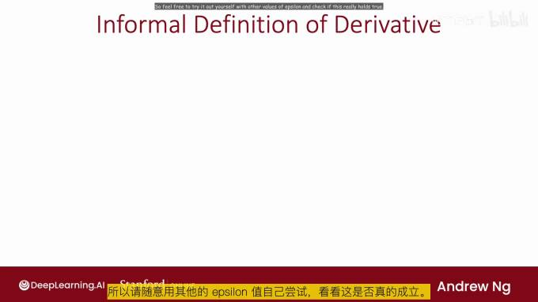
05:43这就引出了导数的一个非正式定义，即每当 w 增加一个微小量 epsilon，这导致 j 关于 w 增加 k 乘.。
05:58在我们刚才的例子中，k 等于六。
06:02那么我们就说 j 关于 w 对 w 的导数等于 k，在刚才的例子中，k 再次等于六。
06:12所以你可能还记得，在实现梯度下降时，你会反复使用这个规则来更新参数 w 下标 j，其中和平常一样，alpha 是学习率。
06:26那么梯度下降做了什么呢？
06:29请注意，如果导数很小，那么这个更新步骤会对参数 w 下标 j 做一个小更新，而如果这个导数项很大，这将导致对参数 w 下标 j 的一个大改变。
06:45这是有道理的，因为这本质上意味着，如果导数很小，这说明改变 w 不会对 j 的值产生大的影响。
06:58因此我们不用费心去对 w 下标 j 做巨大的改变。
07:03但如果导数很大，这意味着即使是对 w 下标 j 的微小改变，也能在多大程度上改变或降低代价函数关于 w 方面产生巨大影响。
07:16所以在这种情况下，我们对 w 下标 j 做一个更大的改变，因为这样做实际上会极大地影响我们能降低多少代价函数 j。
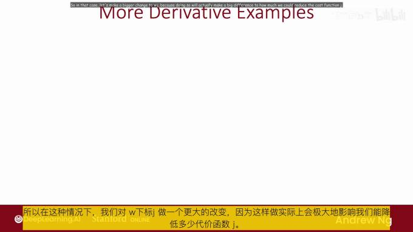
07:26我们来看几个关于导数的例子。
07:31你在刚才的例子中看到的是，如果 w 等于三，且 j 关于 w 等于 w 的平方等于九，那么如果 w 增加了 epsilon 零点零零一，那么 j 关于 w 变为 j 关于三点零零一，现在是九点零零六零零一，或者换句话说，j 增加了大约零点零零六，N。
07:59即六乘以零点零零一，或六乘以 epsilon，这就是为什么 j 关于 w 对 w 的导数等于六。
08:14我们来看看对于其他 w 值，导数会是什么。
08:22在这种情况下，j 关于 w 即 w 的平方，现在等于四，并且如果 w 增加零点零零一，那么 j 关于 w 变为 j 关于二点零零一，等于这个值，四点零零四零零一。N。
08:38所以 J 关于 W 已从四增加到了这里的这个值，这大约比四大四乘以 epsilon，这就是为什么现在导数是四，因为 w 增加了 epsilon 导致 J 关于 w 增了四倍那么多。
09:01再次强调，这个额外的零点零零一是因为它不够准确，因为 epsilon 并非无穷小。
09:08或者我们来看看另一个例子。
09:11如果 W 等于负三会怎样？
09:15j 关于 W，即 W 的平方，仍然等于九，因为负三的平方是九。
09:22如果 w 再次增加 epsilon，那么你现在有 w 等于负二点九，所以那是 j 关于负二点九。
09:34而负二点九九九的平方等于这个八点九九四零零一，因为 W 是负三加零点零零一！
09:44在这里请注意，j 关于 w 下降了大约零点零零六，即六乘以 epsilon。
09:55所以在这个例子中，我们得到的是从九开始，但它现在下降了，注意这里是向下的箭头而不是向上的箭头，下降了六乘以 epsilon。
10:10或者等价地说，它增加了负六乘以 epsilon。
10:16这就是为什么这种情况下的导数等于负六，因为当 epsilon 很小时，w 增加 epsilon 导致 j 关于 w 增加负六乘以 epsilon。N。
10:32另一种可视化方法是绘制函数 j 关于 w 的图像。
10:40所以如果横轴是 W，这是 j 关于 w，那么当 w 等于三时，j 关于 w 等于九。
10:52当它为二时，j 关于 w 等于四。
10:56我想做一个观察，如果你以前上过微积分课，这个观察可能相关。
11:03但如果你没有，我接下来六十秒说的可能没意义，但不用担心。
11:10你不需要理解它也能完全跟上这些视频的其余部分。
11:15如果你在某个时候上过微积分课，你可能会意识到导数对应于一条刚好在这一点（比如 w 等于三处）与函数 j 关于 w 相切的直线的斜率。
11:31所以这条线在这一点的斜率，而斜率是这个高度除以这个宽度，当 w 等于三时，结果等于六。
11:41当 W 等于二时，这条线的斜率结果是四。
11:46而当 W 等于负三时，这条线的斜率结果是负六。
11:51在微积分中，这些线的斜率就对应于函数的导数。
11:57但如果你以前没有上过微积分课，并且以前没见过这个斜率的概念，不用担心。
12:05现在，在继续之前，我想做最后一个观察，那就是你在这三个例子中都看到，j 关于 w 是同一个函数。
12:16关于 W 等于 W 的平方。
12:20但 j 关于 w 的导数取决于 w。
12:24当 w 为负三时，导数是负六。
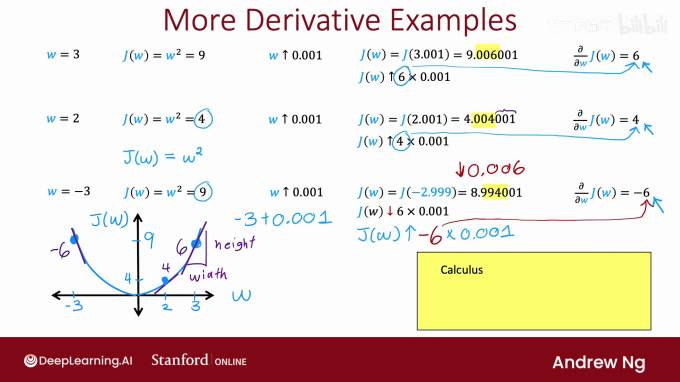
12:35事实证明，如果你熟悉微积分，再说一次，不熟悉也完全没问题。
12:42微积分使我们能够计算出 J 关于 W 对 W 的导数为二乘以 W。
12:51稍后，我将向你展示如何使用 Python 和一个叫做 SymPy 的巧妙 Python 包来自行计算这些导数。
13:02但因为微积分告诉我们 w 的平方，j 关于 w 的导数是二 w，这就是为什么当 w 为三时，导数是二乘以三。
13:16当它为二时是二乘以二。
13:22当它为负三时是二乘以负三，因为这个 w 的值乘以二，结果就给出了导数。
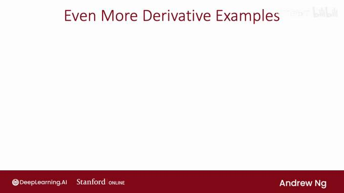
13:33在我们结束之前，再多看几个例子。
13:37对于这些例子，我将设 W 等于二。
13:42你在上一张幻灯片中看到，如果 J 关于 W 是 W 的平方，那么我所说的导数将是二乘以 W，即四。
13:52因此，如果 W 增加了零点零零一，即 epsilon，J 关于 W 就变成了这个，或大致上 J 关于 W 增加了四乘以 epsilon。
14:10如果 J 关于 W 等于 W 的立方呢？
14:15所以在这种情况下，W 的立方，二的立方，将等于八。
14:21或者如果 J 关于 W 仅仅等于 W 呢？
14:25那么这里，W 等于二。
14:28或者如果 J 关于 W 是 W 分之一呢？
14:32在这种情况下，W 分之一，二分之一将是零点五。
14:38当代价函数 J 关于 W 是 W 的立方、或 W、或 W 分之一时，J 关于 W 关于 W 的导数是多少呢？！
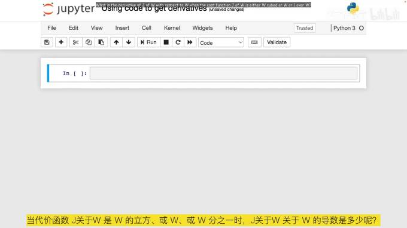
14:50让我向你展示如何使用一个名为 SymPy 的库或包来自行计算这些导数。
14:57那么让我首先导入 SymPy。
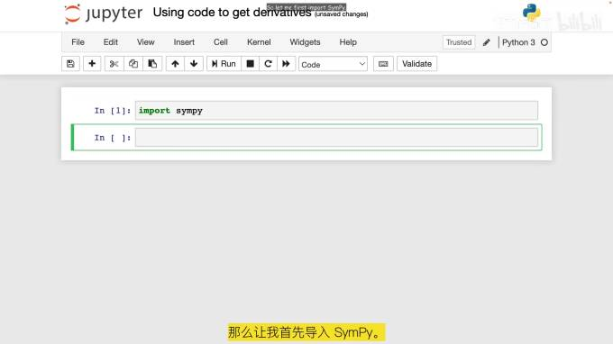
15:02我要做的是告诉 SymPy，我将使用 J 和 W 作为计算导数的符号。
15:13对于我们的第一个例子，我们的代价函数等于 w 的平方。
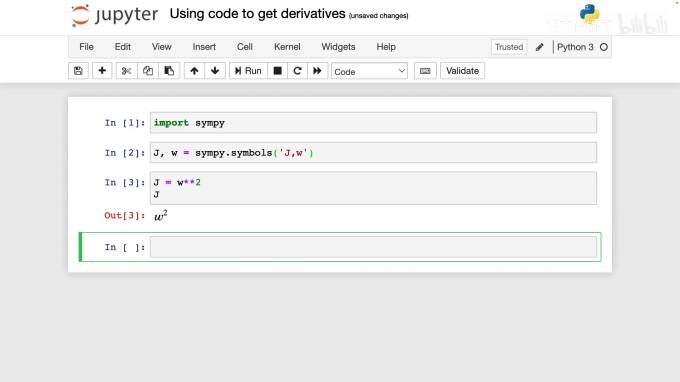
15:21请注意 SymPy 实际上也用这种漂亮的字体呈现了它。
15:27现在，如果我们想用 SymPy 求关于 W 的导数，我们应该这样做。
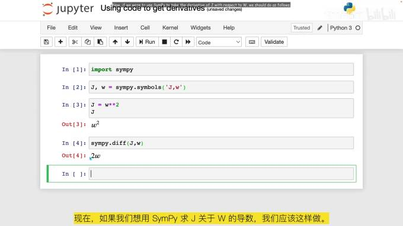
15:33你看到 SymPy 告诉你这个导数是二 w。
15:38让我实际选择一个变量 dj_dw，将其设为等于这个。
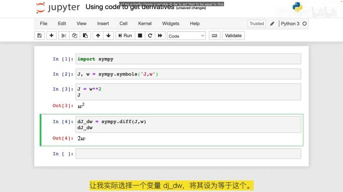
15:44我在此再输入一遍，把它打印出来。
15:51如果你想将 w 的值代入这个表达式求值，你可以执行 .(w,二)。
16:00这意味着将 w 等于二的值代入此表达式并求值。
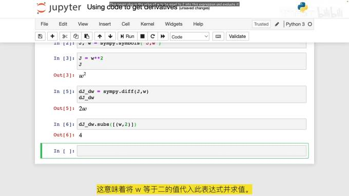
16:07这给出了值四，这就是为什么当 w 等于二时，我们看到的导数是四。
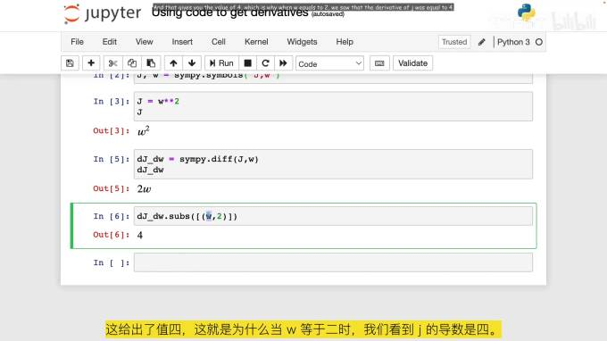
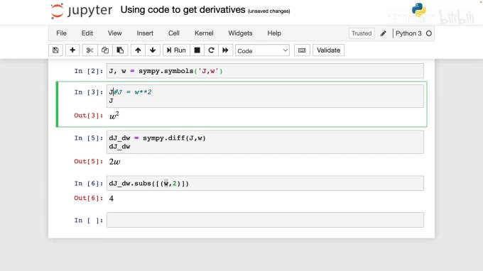
16:17我们再看其他几个例子。
16:19如果是 W 的立方呢？
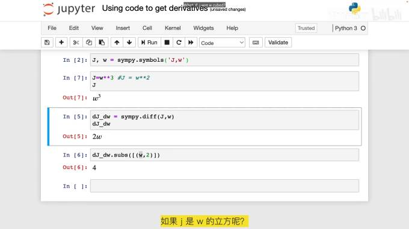
16:24那么导数变为三乘以 w 的平方。
16:28所以从微积分可知，这也是 SymPy 为我们计算的，如果 j 是 w 的立方，那么 j 关于 w 的导数是方。
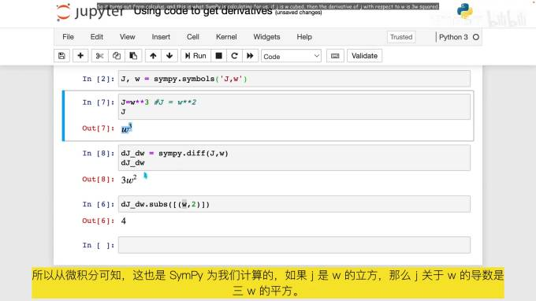
16:39并且取决于 w 的值，导数的值也会改变。
16:45我们可以代入，如果 w 等于二，在这种情况下你会得到十二。
16:52或者如来寻宁 W 呢？
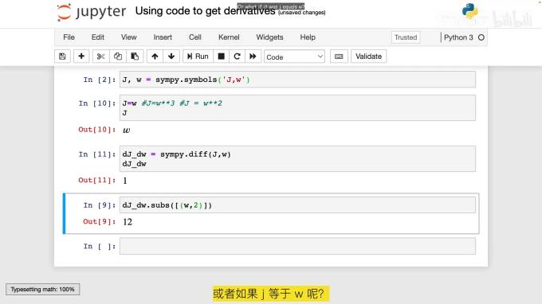
16:56在这种情况下，导数正好等于一。
17:01或者我们最后的例子是：如果 j 等于 w 分之一呢？
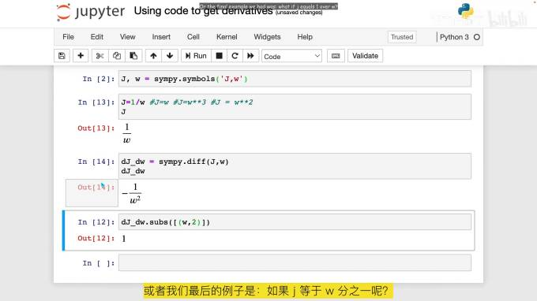
17:07在这种情况下，导数结果是负的 w 平方分之一。
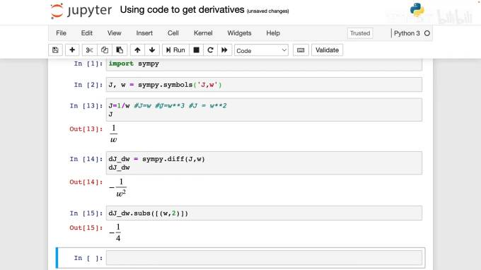
17:16那么我要做的是，把我们计算出的导数整理一下。
17:20记住，对于 w 的平方，它是二 w。
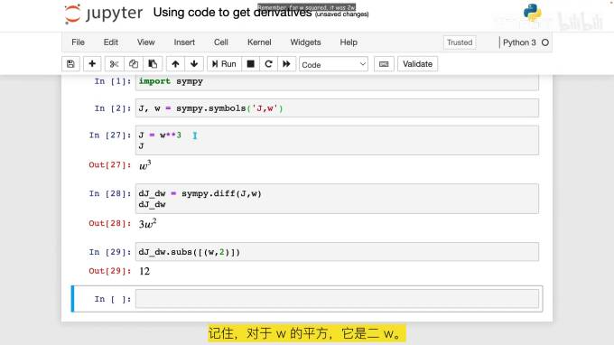
17:25对于 w 的立方，它是三 w 的平方。
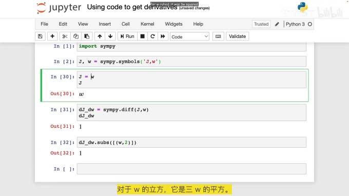
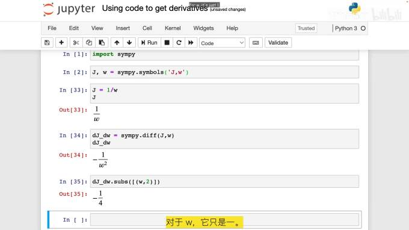
17:32而对于 w 分之一，它是负的 w 平方分之一。
17:37让我们把这个复制回我们的另一张幻灯片。
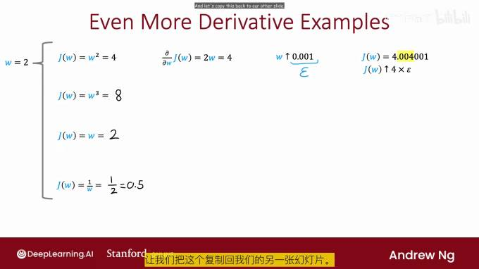
17:42所以 SymPy，或者说实际上是微积分，告诉我们的是，如果 J 关于 W 是 w 的立方，导数是三 w 的平方，当 w 等于二时，等于十二。
17:55当 j 关于 w 等于 w 时，导数正好等于一。
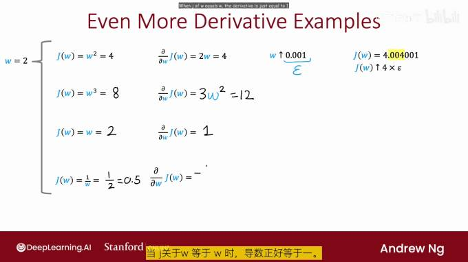
17:59而当 j 关于 w 是 W 分之一时，是负的 w 平方分之一，当 w 等于二时，是负四分之一。
18:11让我们再次核对一下我们从 SymPy 得到的这些表达式是否正确。
18:19所以让我们尝试将 w 增加 epsilon。
18:23在这种情况下，j 关于 w，同样的，如果你想的话，可以随意暂停视频并用自己的计算器检查这个计算。
18:33但在这种情况下，j 关于 w，二点零零一的立方，变成了这个。
18:40所以它从八大约增加到了八点零一二。
18:48因此它大约增加了十二乘以 epsilon。
18:52所以，导数确实是十二。
18:56或者，如果 j 关于 w 等于 w，那么如果 w 增加了 epsilon，那么 j 关于 w，也就是 w，现在是二点零。
19:08所以它增加了零点零零一。
19:14所以关于 W 增加了刚好一乘以 epsilon。
19:19所以守数确失寻了。
19:23请注意这里，这实际上完全等于 epsilon，即使 epsilon 并非无穷小。
19:31或者我们的最后一个例子，如果 J 关于 W 等于 W 分之一，如果 W 增加了 epsilon，那么 W 是二点零一分之一。
19:44然后结果是 J 关于 W 约等于零点四九九七五，还有一些我截断掉的额外数字。
19:54但这结果是零点五减去零点零零零二五。
20:02所以 J 关于 W 从零点五开始，然后下降了零点零零零二五。
20:10而这个零点零零零二五，是零点二五乘以 epsilon。
20:18它下降了这么多，或者说它增加了负零点二五乘以 epsilon，因为负零点二五乘以 epsilon 等于这里的这一项。
20:29所以我们看到，如果 w 增加了 epsilon，j 关于 w 就会增加负四分之一或负零点二五乘以 epsilon，这就是为什么这种情况下的导数是负四分之一。
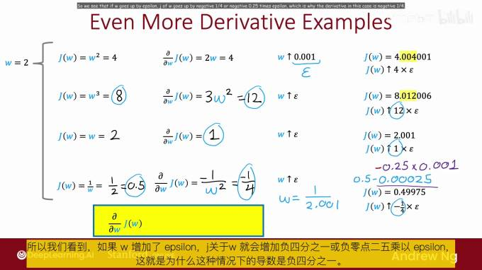
20:45所以我希望，通过这些例子，你对 j 关于 w 对 w 的导数意味着什么有点感觉了。
20:54它不过是问，如果 w 增加了 epsilon，j 关于 w 会增加多少？
21:02会增加某个常数 k 乘以 epsilon，而这个常数 k 就是导数。
21:09并且 K 的值将同时取决于函数 j 关于 w 是什么，以及 w 的值是多少。
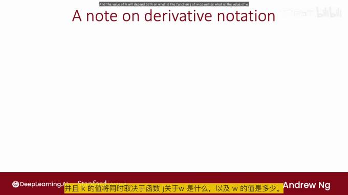
21:17在本视频结束之前，我想简要提一下你在其它文本中可能看到的用于书写导数的符号，即如果 j 关于 w 是单个变量的函数，比如说 w，那么数学家有时会将导数写成 d dw，作用于 j 关于 w。
21:27即如果 j 关于 w 是单个变量的函数，比如说 w，那么数学家有时会将导数写成 d dw，作用于 j 关于.。
21:38注意这里，这个符号使用的是小写字母 d。
21:45而相比之下，如果是多于一个变量的函数，那么数学家有时会使用这个弯弯曲曲的替代 d 来表示 j 关于其中一个参数的导数。
22:04在我看来，这种区分常规字母 d 和这种花体微积分导数符号 d 的记法，做这种区分对我来说意义其微。
22:17而且这种记法，在我看来，过度复杂化了微积分。
22:25但由于历史原因，微积分教材会根据是单变量函数还是多变量函数来使用这两种不同的记法。！
22:38但我认为从实用角度讲，这种符号惯例，它往往只会把事情过度复杂化，我觉得，这实际上并不是必要的。
22:49所以对于这门课，我打算到处都使用这种记法，即使只有单个变量时也是如此。
22:59事实上，对于我们的大多数应用，函数都是多于一个变量的函数。
23:06因此，另一种记法，有时被称为偏导数记法，这实际上是几乎一直都正确的记法，因为通常有多个变量。N。
23:17但我希望，在整个讲座中都使用这种记法能简化表述，并使导数更容易理解一些。
23:27事实上，这种记法是你在此前的视频中一直看到的。
23:32而为了简洁，有时你也会看到，不是写出这里的这个完整表达式，而是把它简写为 j 对的导数或偏导数，或者像这样写。
23:46这些只是这里这个表达式的简化缩写形式。
23:56所以我希望这能让你对导数是什么有点感觉。
23:59它不过是，如果 w 增加一点点 epsilon，j 关于 w 会因此变化多少？
24:07接下来，我们看看如何在神经网络中计算导数。
24:13为此，我们需要了解一种叫做计算图的东西。